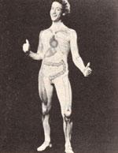
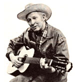

Selected doin's of well-known MOTHER-types from around the world.
JOHN (SLIM GOODBODY) BURSTEIN
Twice a week children watching Captain Kangaroo's Wake-Up morning television program witness a song and dance routine that stresses the benefits of maintaining a healthy body and developing good eating habits. The performer of those skits is Slim Goodbody, one of the most active and effective health crusaders in America today.
Actor John Burstein created the Slim Goodbody character eight years ago, while working with youngsters at the Floating Hospital in New York. Dismayed by the fact that most children know nothing about how their bodies func tion-let alone about how to care for them properly-John began composing stories and songs to entertain and educate the youngest generation. Soon afterward he designed the unique "body suit" costume that has now become his trademark.
Slim has since starred in an eight-part award-winning public television series entitled The Inside Story- which has been seen by millions of youngsters-and produced numerous records and books instructing children in matters ranging from why they need to brush their teeth to how their hearts and blood circulatory systems operate.
Currently John is producing a children's stage presentation which he'll take on tour to major theaters and auditoriums across the country. The show will feature life-sized puppets, films, and the eventual triumph of Captain Slim Goodbody over the evil character, Sludge . . . who-given free reignwould despoil the universe with junk food and its wrappings.
Although John Burstein admits that Slim Goodbody was created as a vehicle by means of which the performer could demonstrate his many talents-composing, acting, writing, dancing, and gymnastics-John is also truly excited by the potential he sees in children, and is glad to be teaching them. Burstein hopes his positive adult role model (and his insistence that good nutrition can be fun) will prove to be of lifelong benefit to the youngsters he entertains.-CK.
HUGH BRANNUM
Another popular children's folk hero (who, it just so happens, is also connected with the Emmy Award-winning Captain Kangaroo series) is Hugh Brannum, better known to millions of Americans as Mr. Green Jeans.
But when Mr. Brannum isn't posed in front of the television cameras entertaining children, the actor takes time from his busy schedule to speak to the public, spreading the word that modern humanity's single most significant task is rebuilding the earth.
During a recent appearance at an Earth Day celebration in Pennsylvania, Hugh spoke to more than 3,000 people about the necessity of conserving our world's most precious resource . . . clean, fresh water. Speaking as one who's had a "lifelong love affair with water", Hugh expressed his concerns to the audience by quoting statistics such as the following:
Every day the U.S. removes 21 billion more gallons of water from the ground than seeps back in. It takes 3,500 gallons of water to produce one steak, and 120 gallons of water to produce one egg. Ninety percent of the water that falls to the ground as rain evaporates almost immediately.
The man who plays Mr. Green Jeans is also concerned with the ramifications of our everincreasing world population growth and the ever-diminishing layer of topsoil. The actor believes that there are specific moments in history when a new era begins. He feels strongly that we are now at precisely such a moment, and that we must all unite-bringing forth discipline, courage, and a new vision-in order to accomplish our task.-CK.
CONGRESSMAN MORRIS UDALL
Arizona Democrat Morris King Udall has been called the single most effective individual involved in the struggle to prevent Interior Secretary James Watt from dismantling policies protecting national parks, wilderness areas, and public lands.
Mr. Udall-chairman of the House Interior and Insular Affairs Committee-has earned a reputation as a dedicated conservationist, a steward of America's energy resources, and an advocate of atomic weapons reduction. He led the 1981 effort to prevent the Nuclear Regulatory Commission from winning authority to grant temporary licenses to new nuclear power plants prior to completion of safety hearings on the installations. Udall also has committed his efforts to the search for safe ways to dispose of the nuclear wastes we've already produced.
Possibly the congressman's most noteworthy achievement, though, was his cosponsorship of the Alaska Lands Bill, passed in 1980. Considered the most significant conservation measure of the last decade, the bill set aside 104.3 million acres of some of the most spectacular scenery in the world-including the only Alaskan river basin whose ecosystem has not been visibly affected by humans-as a federally protected wilderness area.
"Mo"-as he's known around Capitol Hill-has expressed concern over the current administration's attitude toward conservationism. His feeling for the land dates back to his boyhood in a small desert community halfway between Phoenix and Albuquerque. "I learned that nature had first laws . . . that nature was bountiful and generous if you handled it right. We had no tractors. We had horses and plows. I learned the cycles, the seasons . . . it's just a closeness with nature, a closeness to fundamental laws of nature that I guess you get in no other way."-CK.
IN BRIEF . . .
TERRY MEHRKAM-a 36-year-old inventor of wind energy systems-fell to his death last December from a tower that supported one of his own turbines. California's OSHA office is conducting an investigation, which could lead to further safety regulations of wind turbine installations .... First Daughter PATTI (REAGAN) DAVIS, a vegetarian and wholistic health advocate, has taken a stand against misleading food advertisements, particularly those geared toward children .... Actress (and former Muriel Cigar spokeswoman) EDIE ADAMS lives on-and runs-a 160-acre almond farm in Bakersfield, California. Convinced in 1977 that she should "get back to the land", Edie swapped her southern California mansion and a Malibu beach house for her rural acreage.CK.
|
 |
 |
|